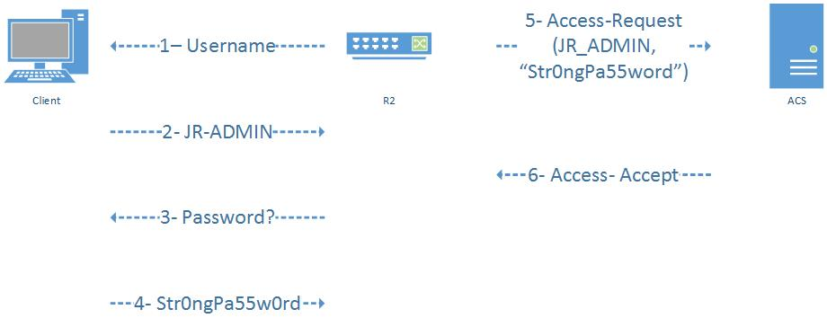
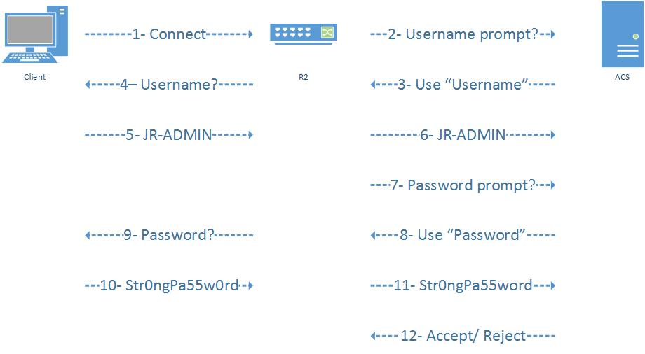
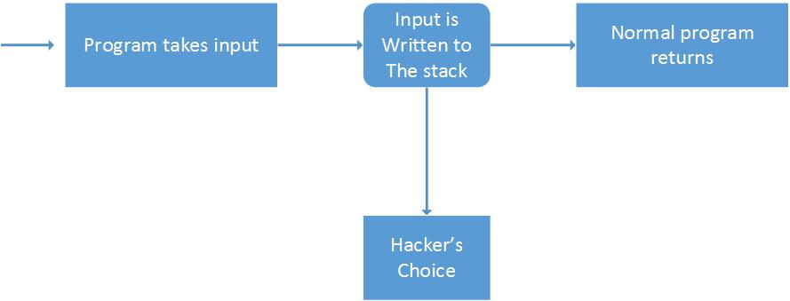
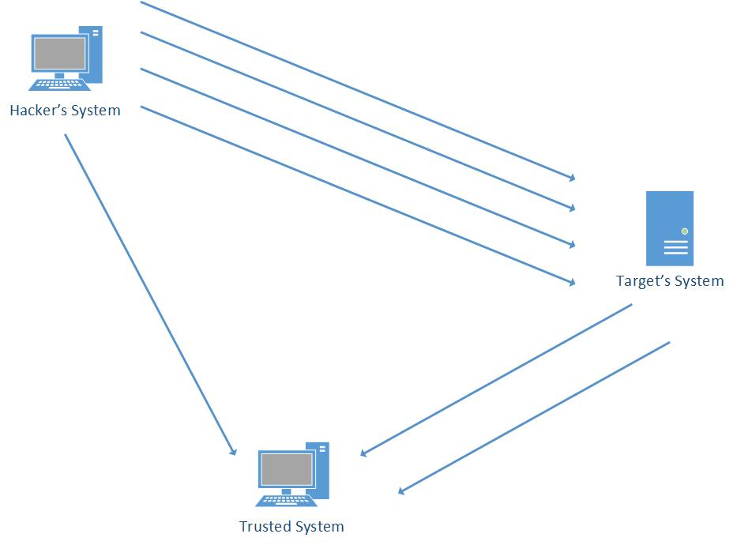
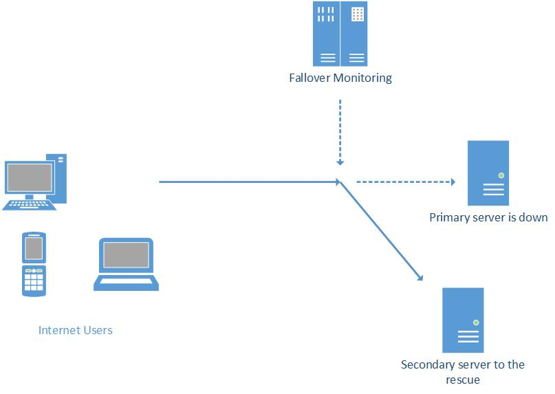
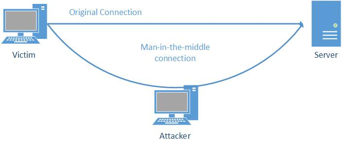

CSA223
Chapter 3
- List any two messages used by RADIUS?
- Access- Request
- Access- Accept
- Access- Reject
- Access- Challenge
- List any two messages used by TACACAS+?
- Accept
- Reject
- Error
- Continue
- List any two types of Accounting Authentication?
- Network || Provides information for all PPP, SLIP, or ARAP sessions, including packet and byte counts.
- EXEC || Provides information about user EXEC terminal sessions of the network access server.
- Draw the RADIUS Authentication Process?

- Draw the TACACAS+ Authentication Process?

Chapter 4
- List any two reasons for Hacker's motivation
- Challenge
- Greed
- Malicious Intent
- List any two methods that can be used to cause the switch to send traffic to the sniffer?
- Convince the switch that the traffic of interest should be directed to the sniffer
- Cause the switch to send all traffic to all ports
- List any two Hacking Techniques?
- Open Sharing
- Bad Password
- Programming Flow
- Social Engineering
- Buffer Overflow
- Denial of Service
- Draw how a Buffer Overflow works

- Draw how the IP spoofing in the real world

Chapter 5
- List any two Confidentiality Mechanism?
- Physical Security Controls
- Computer File Access Control
- File Encryption
- List any two File Confidentiality Requirements?
- Identification and Authorization
- Proper Computer System Configuration
- Proper Key management if encryption is used
- List any two important factors of Integrity?
- Integrity of Information During Transmission
- integrity of Files
- Integrity
- Draw the FAIL-OVER Process?

- Draw the Integrity of Information during Transmission

FULL FORM
- RADIUS: Remote Authentication Dial In User Service
- TACACS+: Terminal Access Controller Access - Control System Plus
- AAA: Authentication, Authorization, and Accounting
- IRC: Internet Relay Chat
- I&A: Identification & Authentication